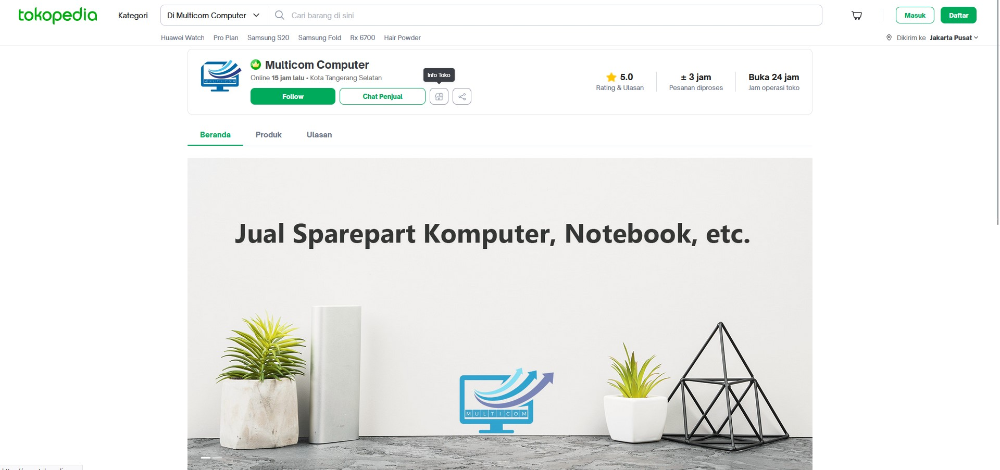
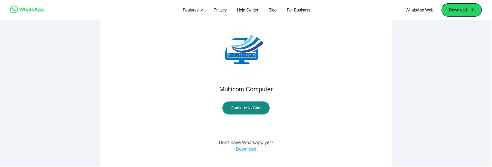

Dibuat Oleh :
Febrianashar Yusron
MULTICOM Computer adalah Distributor Specialist Laptop Lenovo Thinkpad Series yang Terpercaya dan Profesional
menjadi tren populer.
Laptop yang kami tawarkan memiliki spesifikasi yang Tinggi. Untuk berbagai keperluan Design, Editing Video, dan Kebutuhan Kerja lainnya. Kami telah mensuplai kebutuhan laptop untuk perusahaan, lembaga, maupun perseorangan (end user). Toko ini sudah berjalan 5 tahun dan sudah mengeluarkan ribuan unit laptop. banyak costumer yang merasakan kepuasan disaat membeli di toko, pelayanan ramah, harga terjangkau dengan spesifikasi laptop, full dijelaskan mengenai laptop, dan langsung di layani oleh owner nya ".
"MULTICOM Computer ini menjual unit original dan mempunyai garansi personal toko, bahkan setiap pembeliaan owner berkal-kali meng-QC unit agar tidak mengecewakan costumer. Setiap pembelian mendapatkan kybord protektor,alas mouse, mouse usb, dan tas."
MULTICOM Computer juga mempunyai bebrapa cabang di Indonesia
-Tangsel ciputat (Pusat)
-Surabaya (Cabang 1)
-Ponorogo (Cabang 2)
 
Seri THINKPAD
- X230
- X240
- X250
- X260
- T440
- T470
- T480
- T480s
- T490 Ryzen dll.
Spesifikasi Laptop
Intel i3
Intel i5
Intel i7
Ryzen R5
SSD
Untuk selengkapnya, klik disini!